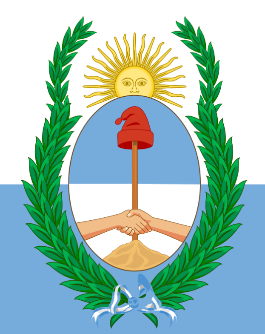

About Me
am a dedicated QA Engineer committed to growth and continuous improvement in my professional endeavors. With a solid foundation of experience and academic knowledge, I strive to deliver exceptional quality in every product I work on. I constantly look for opportunities to improve my skills and experience, ensuring I stay up to date with new practices and technologies. My goal is to contribute to the success of organizations by applying great attention to detail and an analytical mindset.
Mendoza is a city in western Argentina and capital of the province of the same name. It is located in the plain east of the Andes mountain range. It is one of the main cities in the country, and with its urban agglomerate, called Greater Mendoza, it reaches a total population that exceeds one million inhabitants. Its surface is 57 km², although its metropolitan area extends 168 km². It is a main industrial hub, a fundamental strategic point in Mercosur relations. Economic activity is linked to commerce, the service industry and mainly tourist activity around the wine industry, which is why, along with other cities in the world, it is called the world capital of wine.
